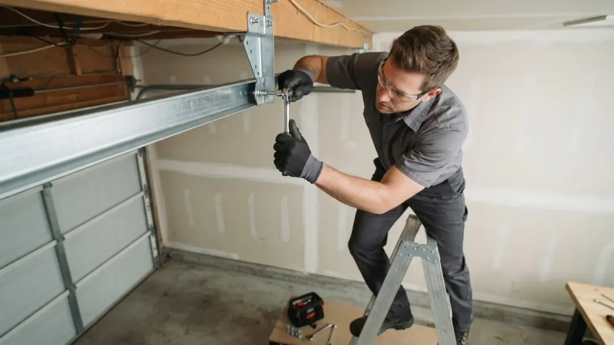
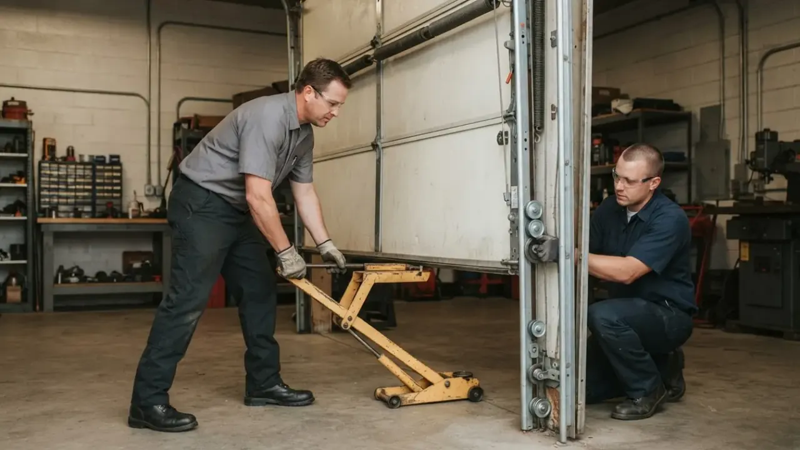
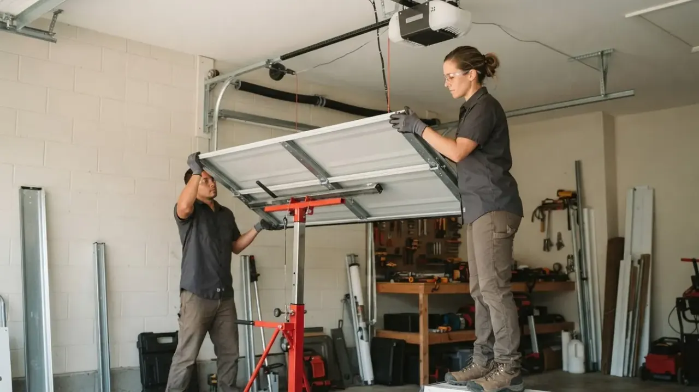
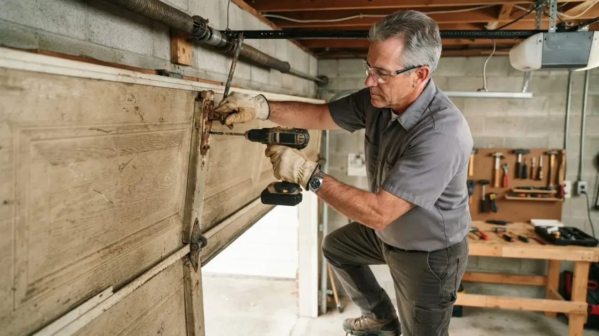
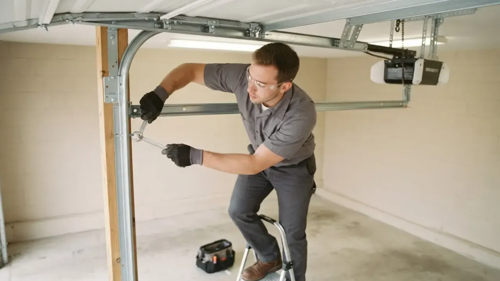
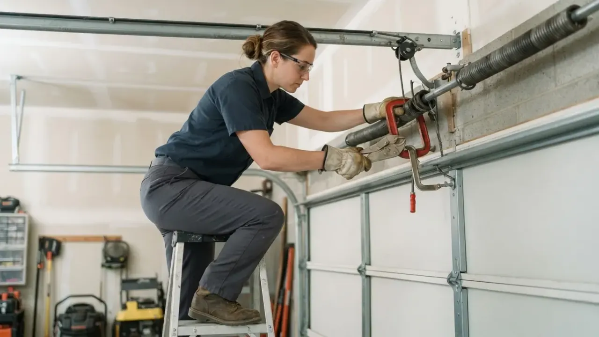

Live responseA real dispatcher, day or night

Our services
Garage door repair services Tampa homeowners call first
One call covers the whole door — springs, cables, rollers, tracks, panels, openers, sensors, remotes and keypads. Your call reaches a live dispatcher, who sends a truck stocked for the job you described. Same-day repair or full replacement, you get the price before any work starts.
Local teamTechnicians serving Tampa
Clear optionsScope and price before work
Clean finishProtect, repair, test, tidy
Work backedWritten workmanship promise
Complete service support
Every Garage Door Service We Offer in Tampa
One call covers the whole door — springs, cables, rollers, tracks, panels, openers, sensors, remotes and keypads. Your call reaches a live dispatcher, who sends a truck stocked for the job you described. Same-day repair or full replacement, you get the price before any work starts.
01!Urgent response
Garage Door Repair
For any door that will not open, close, or stay level, we start with the balance test, then inspect the springs and cables to find the actual failure before quoting a fix. In South Tampa, the usual call is a door that slams shut or stops halfway.
Explore Garage Door Repair
02↯Restore flow
Garage Door Spring Repair
A broken torsion spring is a common reason a door will not lift — often announced by a loud bang from the garage. We match the wire gauge and cycle rating, wind the new springs with proper winding bars, and reset the door balance.
Explore Garage Door Spring Repair
03♨Reliable service
Garage Door Opener Repair
An opener that hums without lifting, trips the breaker, or loses its travel limits is repaired on site. We service LiftMaster, Chamberlain, Genie, Craftsman, Linear, Marantec and Sommer units, and most gear and logic board swaps are finished on the same visit.
Explore Garage Door Opener Repair
04⚑Trusted repairs
Garage Door Cable Repair
A snapped galvanized steel cable leaves the door hanging crooked — and unsafe to use. We replace both cables as a pair, reseat them on the cable drums, and re-tension the torsion assembly. A frayed cable means the door stays parked until it is fixed.
Explore Garage Door Cable Repair
05!Urgent response
Garage Door Panel Repair
A dented or cracked section can usually be straightened or swapped without replacing the whole door. We match panel profiles for the Clopay, Amarr and Wayne Dalton doors common across Hillsborough County — hail and bumper hits are the usual culprits.
Explore Garage Door Panel Repair
06↯Restore flow
Garage Door Roller Repair
Worn nylon or steel rollers make a door grind and shake the whole frame. We replace the rollers, check the clearances, and run the door to confirm it tracks smooth and quiet — in Carrollwood, a noisy door usually just needs this.
Explore Garage Door Roller Repair
07♨Reliable service
Garage Door Track Repair
A bent vertical or horizontal track throws the door off its path. We true the rails with a track bender, re-space the brackets, and verify the door runs plumb. Impact damage from a car is the most common cause.
Explore Garage Door Track Repair
08⚑Trusted repairs
Garage Door Hinge Repair
Hinges wear at the knuckle and let panels separate. We replace the hinge, torque the bolts, and check the adjacent sections for stress cracks — a small repair that prevents a much bigger panel failure.
Explore Garage Door Hinge Repair
09!Urgent response
Garage Door Sensor Repair
A blinking safety sensor stops the door from closing. We clean the lenses, realign the brackets, and confirm the beam holds across the full opening. Sun glare on a west-facing door causes a lot of these calls.
Explore Garage Door Sensor Repair
10↯Restore flow
Garage Door Remote Repair
A remote that stopped working is tested, then reprogrammed or replaced. We handle multi-button remotes, Homelink pairing, and rolling-code issues on LiftMaster and Chamberlain systems.
Explore Garage Door Remote Repair
11♨Reliable service
Garage Door Keypad Repair
A keypad that will not accept the code, or has gone dead, is rewired and reprogrammed. We replace wall-mount keypads and confirm the wireless signal reaches the opener. Battery corrosion kills more keypads than anything else.
Explore Garage Door Keypad Repair
12⚑Trusted repairs
Garage Door Off-Track Repair
A door off track is an emergency call. We secure the door, inspect the rollers and cables, and reset it onto the rails. Do not cycle the opener while it is off track — call and we will get it back on.
Explore Garage Door Off-Track Repair
13!Urgent response
Garage Door Installation
A new door is sized to your opening, header and headroom. We hang the tracks, set the springs, and dial in the opener travel, handling Tampa building permit compliance and Florida Building Code wind requirements.
Explore Garage Door Installation
14↯Restore flow
New Garage Door Installation
Replacing an old door with a modern insulated model cuts noise and holds cooler air in the garage. We measure the rough opening, confirm the panel style, and haul the old door away — most installs finish in a single day.
Explore New Garage Door Installation
15♨Reliable service
Garage Door Opener Installation
A new opener install includes the rail, belt or chain, safety sensors, and wall control. We set the force limits and test the auto-reverse per UL 325. Belt drives are the quiet choice for bedrooms above the garage.
Explore Garage Door Opener Installation
16⚑Trusted repairs
Smart Garage Door Opener Installation
A Wi-Fi opener lets you open the door from your phone and get alerts when it moves. We install and pair the unit, set up the app, and walk you through the controls — handy for rentals and package deliveries.
Explore Smart Garage Door Opener Installation
17!Urgent response
Garage Door Replacement
When panels, springs and tracks are all past their service life, replacement beats repair. We quote the door, hardware, opener and haul-away as one job. Insulated steel is the standard pick across Tampa.
Explore Garage Door Replacement
18↯Restore flow
Garage Door Spring Replacement
Torsion and extension springs are replaced with matched pairs rated for the door weight. Cycle counts matter — a cheap spring fails in a few years — so we install springs rated for 15,000 to 25,000 cycles.
Explore Garage Door Spring Replacement
19♨Reliable service
Garage Door Cable Replacement
Cables are replaced in pairs, with galvanized steel cable sized to the door. We reseat the cable drums, check the winding cones, and re-balance the door. A door hanging low on one side is the tell.
Explore Garage Door Cable Replacement
20⚑Trusted repairs
Garage Door Panel Replacement
A single-section swap keeps the door looking factory. We source matching panels for Clopay, Amarr and Wayne Dalton doors and reseal the joints. Color match is close, but rarely perfect on older doors.
Explore Garage Door Panel Replacement
21!Urgent response
Garage Door Roller Replacement
All rollers are swapped at once so the door tracks evenly. Nylon rollers run quieter than steel and last longer in Florida humidity — a quick job that changes how the door sounds.
Explore Garage Door Roller Replacement
22↯Restore flow
Garage Door Opener Replacement
When the motor is shot or parts are discontinued, a new opener costs less than chasing repairs. We remove the old unit, install the new one, and reprogram every remote and keypad — one visit, done.
Explore Garage Door Opener Replacement
23♨Reliable service
Garage Door Maintenance
A yearly tune-up catches worn springs, loose hinges and frayed cables before they strand you. We lubricate, tighten, balance and test the safety reverse — cheaper than an emergency call at midnight.
Explore Garage Door Maintenance
24⚑Trusted repairs
Garage Door Tune-Up
A tune-up covers lubrication, a balance check, roller inspection, hinge tightening and safety sensor testing. It takes about an hour, and is best done before summer heat and storm season stress the hardware.
Explore Garage Door Tune-Up
25!Urgent response
Garage Door Lubrication
We use a lubricant made for springs, hinges and rollers — not WD-40. The right product stops squeaks and slows wear, and we clear grit from the tracks so the door glides.
Explore Garage Door Lubrication
26↯Restore flow
Garage Door Safety Inspection
We check the auto-reverse, photo-eye sensors, spring condition, cable wear and hardware torque against UL 325. You get a written list of what is fine and what needs attention — useful for rentals and older homes.
Explore Garage Door Safety Inspection
27♨Reliable service
Emergency Garage Door Repair
Door stuck open overnight, spring snapped, or the door will not secure? We run emergency calls around the clock, secure the opening first, then repair. Call and a technician heads your way.
Explore Emergency Garage Door Repair
28⚑Trusted repairs
Same-Day Garage Door Repair
Most calls placed before mid-afternoon get a same-day visit. Our trucks carry springs, cables, rollers and common opener parts, so the first trip usually finishes the job — no waiting days for a second appointment.
Explore Same-Day Garage Door Repair
29!Urgent response
24/7 Garage Door Repair
The phone line stays open nights, weekends and holidays. A real dispatcher answers and sends the nearest truck. A door that will not close is a security problem, so those calls get priority.
Explore 24/7 Garage Door Repair
30↯Restore flow
Residential Garage Door Repair
Single-family homes, townhomes and duplexes across Tampa are the core of the work. We work around your schedule, protect the floor, and clean up before we leave — one door or a whole subdivision, same standard.
Explore Residential Garage Door Repair
Not sure which category fits? Tell us what you see, hear, or smell and we'll route the right technician.
Describe the problemQuestions about garage door repair costs
How much does garage door repair cost in Tampa?
Most repairs run $185 to $385 for a single failure like a spring, cable or roller set, and a full hardware rebuild with both springs and cables lands around $450 to $650. A basic tune-up is $95 to $165. We quote the job before we start, so the price you hear is the price you pay.
From call to all clear
How our garage door repair service works
At each step you know what happens next, what needs your approval, and how the repair is confirmed.
Call and describe
Tell us what the door is doing: banging, stuck, off track, or dead opener. We ask a few quick questions, give a price range on the spot, and book a window that fits your day.
On-site diagnosis
The technician tests the door balance, inspects springs, cables, rollers and tracks, and checks the opener and sensors. You get the real cause and a firm price before any work starts.
Repair and test
We complete the repair with parts from the truck, then cycle the door at least 10 times. Safety reverse and sensor alignment get verified against UL 325 before we call it done.
Walkthrough and warranty
We show you what failed, what we replaced, and how to keep it running. You get the warranty terms in writing and our number for anything that comes up later.
Questions about emergency service
Is there 24/7 garage door repair in Tampa?
Yes. Our line is staffed around the clock, including weekends and holidays. A door stuck open is a security problem, so those calls get priority dispatch. Emergency calls inside the I-275 loop get same-day service.
Does garage door repair Tampa FL offer emergency service?
Yes. We handle emergency calls for doors off track, snapped cables, broken springs and openers that will not secure the door. We stabilize the opening first, then complete the repair with parts from the truck. Call any hour and a dispatcher will send the nearest technician.
Why homeowners choose us
Why Tampa calls us for garage door repair
A good repair comes down to three things: a phone that gets answered, a truck that already carries the part, and a technician who works to code. That is how the operation is set up — so a call from Downtown Tampa gets the same standard as one from Apollo Beach.

4.8Average rating from 6 verified customer reviews
Questions about finding the best repair company
Who is the best garage door repair company in Tampa?
The right company answers the phone, stocks parts on the truck, and works to UL 325 and Florida Building Code. Ask whether they use springs rated for your door, whether labor is warrantied, and whether they quote before starting. We do all three, and we will happily explain what your door actually needs.
Questions about choosing a repair service
How do I choose a garage door repair service in Tampa?
Check three things: a real local phone number, a clear price before work begins, and a technician who tests the door after the repair. Ask what brand of springs and cables they install and whether the work is warrantied. Anyone who will not answer those questions is not the one to hire.
A problem does not improve with waiting
Need garage door repair Tampa? Call now
A door that will not close is a security risk, and a snapped spring only gets worse with use. We answer around the clock, quote before we start, and carry the parts to finish most jobs the same day — call and a truck gets moving.

Talk with the local team
Contact our Tampa garage door team
Call, text or email and a real person answers, day or night. Tell us what the door is doing and you will get a price range on the spot, plus the soonest arrival window. Most calls placed before mid-afternoon get a same-day visit anywhere in Hillsborough County.